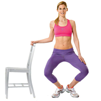

ေျခတံ သြယ္လ် လွပေအာင္

ခံုေနာက္မွာ မတ္တပ္ရပ္ပါ။ ေျခဖ်ားေတြကို ခြဲထားျပီး ေျခဖေနာင့္ေတြကိုေတာ့ ထိထားပါ။
ဒူးကိုေကြးျပီး ေျခဖေနာင့္ေတြကိုေတာ့ ထိလ်က္ ေျမွာက္ပါ။
ေကြးလုိက္ မတ္တပ္ရပ္လုိက္ ၁၅ခါ - အခါ ၂၀ ခန္႔ ျပဳလုပ္ပါ။